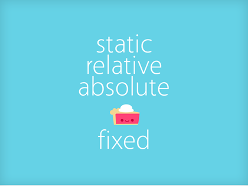

posicionar
Los elementos de una maqueta por defecto tienen position static.
Si position es relative, absolute o fixed podremos usar las propiedades top, right, bottom, left y z-index.
El uso de position relative en capas anidadas puede dar lugar a comportamientos extraños en ie6.
Si position es absolute el elemento no ocupa el espacio que le corresponde en la maqueta..
Si position es fixed el elemento no ocupa el espacio que le corresponde en la maqueta y la posición se realiza con respecto al viewport. Al hacer scroll el elemento se quedará fijo. En explorer 6 funciona realmente mal y hay que tirar de hacks.
Vamos a ver un par de ejemplos para ver el comportamiento de diferentes combinaciones de posiciones.